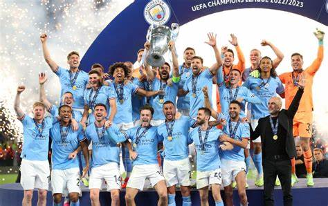

 DI TINGGAL BEBERAPA PEMAIN KUNCI SEPERTI GUNDOGAN,MAHREZ,DLL. MANCHESTER CITY DIYAKINI TETAP MAMPU MENJADI JUARA DENGAN KEDATANGAN PEMAIN BARU YANG TIDAK KALAH ANYAR.
WALAUPUN PEMAIN KUNCI SEPERTI ILKAY GUNDOGAN, RIYAD MAHREZ, JOAO CANCELO MANCHESTER CITY MELAKUKAN TRANSFER YANG CUKUP MENARIK DENGAN MENDATANGKAN BEBERAPA PEMAIN KUAT UNTUK MENGARUNGI MUSIM BARU SEPERTI KOVACIC,GVARDIOL,DOKU,DAN NUNES.
INFO SELENGKAPNYA, klik disini
| Nama | Umur | Posisi |
|---|---|---|
| Scot Carrson | 38 | Goal Keeper |
| Ederson Moraes | 30 | Goal Keeper |
| Steffan Ortega | 30 | Goal Keeper |
| Nama Ghissan Fatah Alaidrus |
| NIM 11210251000090 |
|